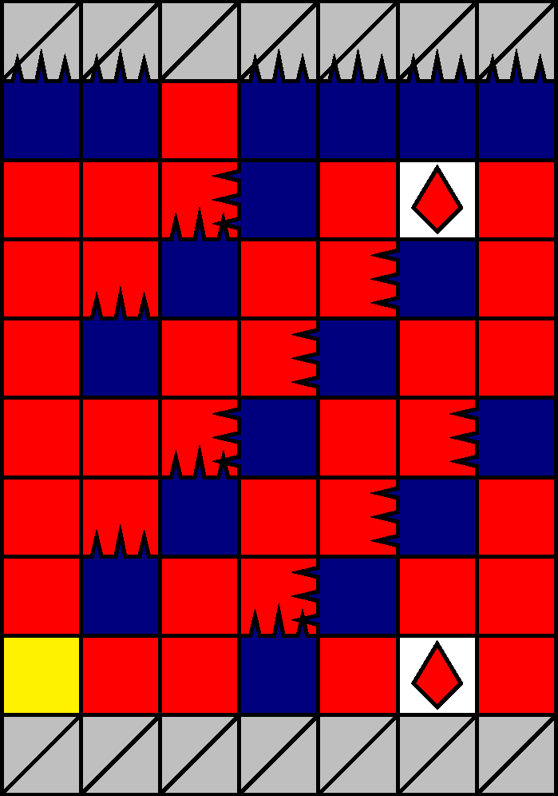
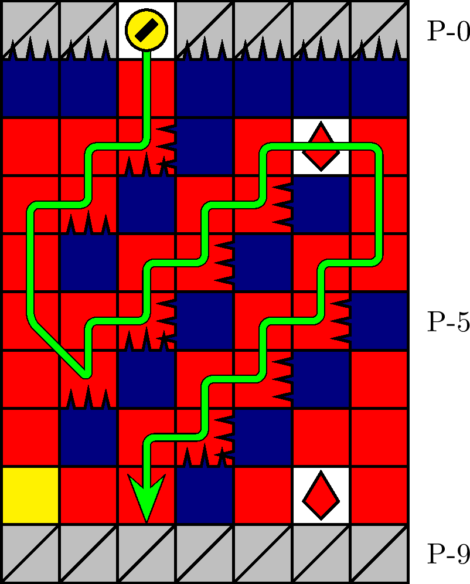

一般指針
エリア・ S 字


指針
S 字は，自然に進入します．座標 P-(8, −1) 通過時に寿命が 50 以下である場合，危険または迂遠でなければ 2 つ目のザクロも取得します．
解説
S 字とは，図 3.2.7.1 のエリアを指します． 500 m型の 82 行目および 1000 m型の 44 行目にそれぞれ確率で出現します． P-1 行目の針の配列によって同定されます．
図 3.2.7.1 の黄色の座標 P-(8, −3) は， 500 m型の場合に右針， 1000 m型の場合に上針です．
代替: 遅くとも座標 P-(4, −3) の時点から右入力を続けると，座標 P-(7, −3) に着地することなく図 3.2.7.2 の経路を取ることができます．右入力の開始が遅ければ，座標 P-(6, −2) に接触するかたちで座標 P-(7, −3) まで降下します．このとき，着地後即座に右上方向へ移動し続けると針 P-(7, −2) （1000 m型ではさらに上針 P-(8, −3)）の針猶予に間に合いますが，やや危険であることに注意します．
500 m型の S 字に関して，エリア下方で任意列に銀貨および +2 列に四針が出現する場合があります．このとき，銀貨が石を斉一な色に変える効果を選ぶ可能性があることから，銀貨取得後のザクロの取得は困難になり得ます．
右下のザクロ P-(8, +2) を取得する場合は，直上に位置する赤石の連結成分の落下に注意します．